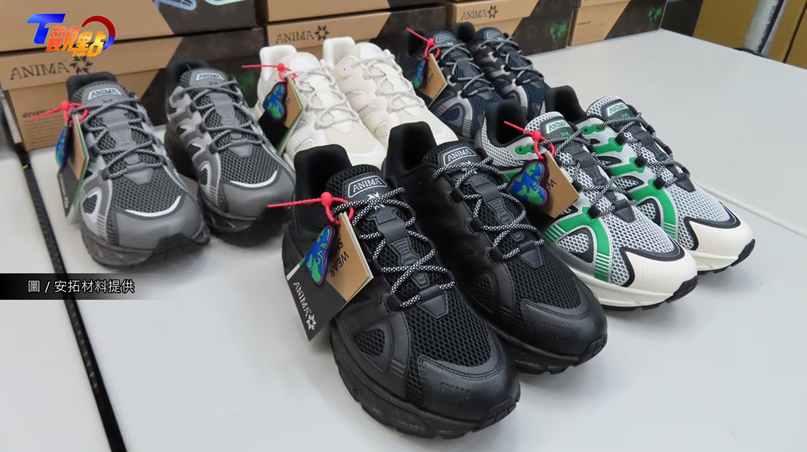
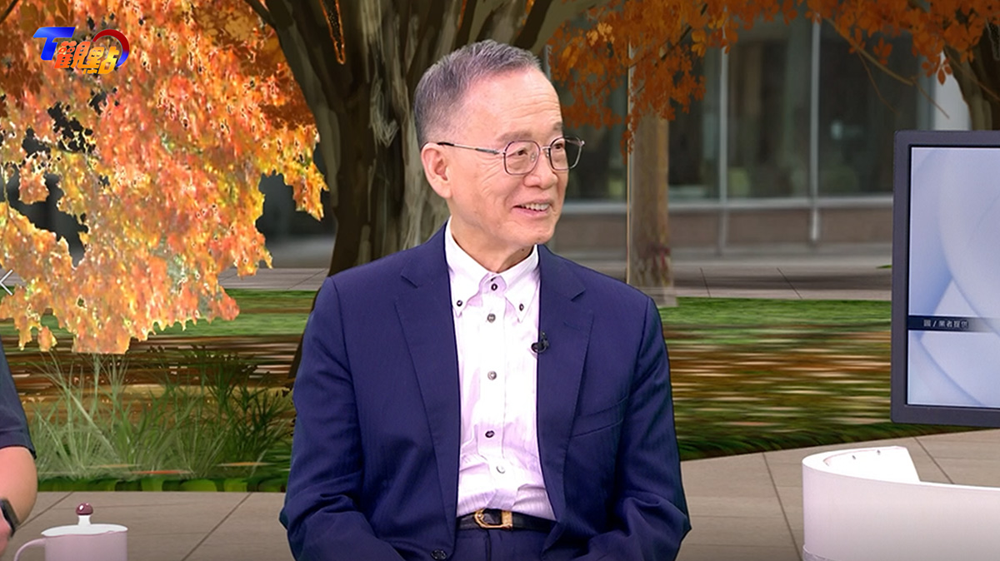
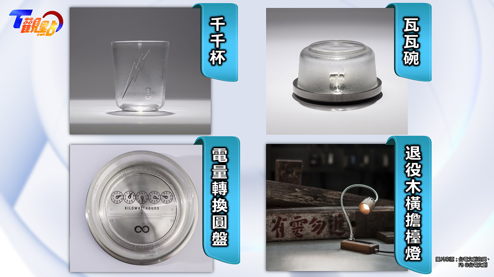

寶特瓶變全循環鞋、老電表變文創精品！「廢料翻身」資源革命
◎ 圖文／T觀點
◎ 圖片來源／安拓材料・台電文創
◎ 發布日期／2026.08.20

◎ 圖文／T觀點
◎ 圖片來源／安拓材料・台電文創
◎ 發布日期／2026.08.20
《資源循環推動法》已經在六月經立法院三讀通過，讓台灣正式邁入資源循環的新時代，聚焦高科技、電子、塑膠、建築等六大關鍵領域，預計將激發超過1,700億元「綠色轉型」或「轉廢為寶」的商機。
舉例來說，全球一年要生產將近240億雙鞋，這數字好驚人！但穿壞之後，卻經常成為不可回收的廢棄物，主要是因為一雙運動鞋從鞋面、中底到大底，往往混合數十種零件與不同材質，再用膠水牢牢黏住，光是拆解就相當困難，更別說回收再利用。

▲ 由回收寶特瓶製成的「全循環鞋」。（圖片／安拓材料提供）
由工研院催生的新創公司「安拓材料」，就把台灣大量回收的寶特瓶變成製鞋原料，做成號稱全球首創的「全循環鞋」，連鞋帶也採用「寶特瓶回收紗」，也因此鞋子穿舊後，整雙鞋可以直接絞碎，重新成為循環鞋的材料。執行長吳晉安透露：「目前已經進入量產，並銷往北美、歐洲以及日本市場。」

▲ 台灣永續能源研究基金會董事長簡又新點出，循環經濟的重點在經濟。（圖片／T觀點提供）
台灣永續能源研究基金會董事長簡又新指出：「過去商品設計是一條生到死的線性經濟；循環經濟則要把廢棄物重新拉回原料端，讓資源不斷回到下一輪使用。」但簡又新也點出一個最現實的關鍵：「循環經濟的重點在經濟」，如果回收之後沒有市場、沒有再利用價值，循環就很難長久。如今《資源循環推動法》三讀通過，最大的改變，就是從過去處理「垃圾」，進一步把它視為「資源」。

▲ 台電退役電表、木橫擔，化身文創商品。（圖片來源／台電文創）
這樣的轉變，也正在台電的廢料倉庫裡發生。隨著智慧電表逐步普及，傳統機械電表陸續退役，一路增加到400萬具，該如何處理成為難題。《台電文創》的解方是將廢棄電表拆解，把厚實通透的電表玻璃重新加工，變成「千千杯」、「瓦瓦碗」；退役的木橫擔，則化身成文青檯燈。台電新事業開發室資深管理師張小燕說：「最困難的地方，就是從一開始發想到材料處理，都是環環相扣」。
簡又新也指出，循環經濟真正要翻轉的是設計理念，在產品還沒誕生以前，就先想好如何進入下一次的周期循環。「今天我們做循環，就是明天我們會永續」，2026年循環經濟的核心趨勢，已經從「概念框架」，全面轉向「法規執行」與「實質效益」，轉廢為寶的綠色資源革命，正加速進行中！


新聞部
副總經理 王結玲
陳致中・陳詩璧・胡瑞麒・華子琛・談雍雍・吳家瑜
節目部
T觀點／莊開文・吳家瑋・莊秀惠・趙昱涵
數位事業部
總監 郭瀧億
內容策展組／廖玉貞・彭嘉儀・林佳瑤・李佳綺
ESG永續發展部
賴盈文・蔣成偉・張玲玲・黎育如・徐新瑜

© TVBS Media Inc. All Rights Reserved｜聯利媒體股份有限公司